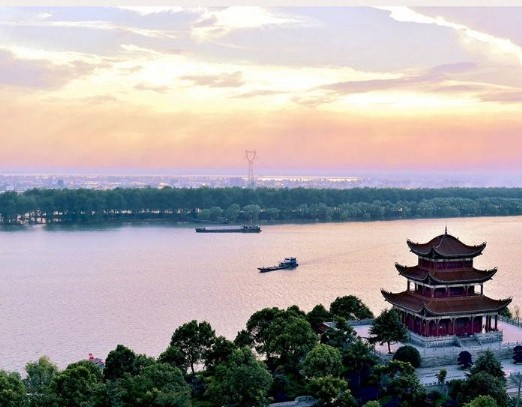
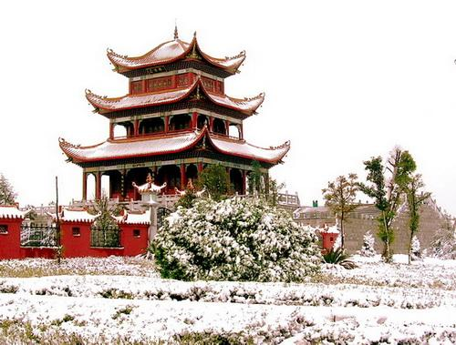

湘阴县，古称罗城[1]，湖南省岳阳市下辖县。位于湖南省东北部
居湘资两水尾闾南洞庭湖滨，湘江自南向北贯穿全境，把全县分为
东西两部，东部为丘陵岗地，西部为滨湖平原，湘阴县地处长沙、
岳阳、益阳三市五县中心，紧邻湖南省省会长沙，县城距长沙中心
城区38公里，处于“长株潭”半小时经济圈内，湘阴县是“长株潭”
经长江出海的必经通道，既是“长株潭”城市群沿江北上在洞庭湖的
“大码头”，2016年3月，湘阴县城被评为2015年度岳阳市最美县城。
2018年11月，被科技部确定为首批创新型县（市）。
我的大湘阴
风景名胜
|
远 浦 楼 |
远浦楼为仿古建筑，屹立于湘江湘阴城区段东岸，在湘阴湘江大 桥旁边，占地面积214.88平方米，于2003年动工复建，2005年 竣工。远浦楼取名源于昔日潇湘八景之一的“远浦归帆”，远浦楼 内陈列有书房展览。成为湘阴县标志性景点之一。重修的远浦楼 由原中共中央主席、建国后中共湘阴县第一任县委书记华国锋同 志题写楼名。 |
 |
|
南 泉 古 刹 |
南泉寺位于湘阴县城东南郊，北距县城3公里，南距长沙38公 里。据康熙三十三年 （1694）《潭州南泉山双林禅寺中兴记》 记载：南泉寺系潭州四十余刹之一。宋绍兴间（1140年左右）普 庵祖师去游憩此，凿井得泉，泉水清冽，乃诛茅建法，创立双林 禅寺。因泉在寺南，故命名为“南泉寺”。 |
.jpg)
|
|
文 庙 |
湘阴文庙始建于北宋庆历八年（1048），至清咸丰元年，占地十 余亩，有19处建筑。几经兴废，现有建筑为清乾隆九年（1744） 重建，则“玉振金声”冲天坊、泮池、状元桥、“太和元气”坊、大城 门、大成殿及厢房组成，是一座保存较为完整的县级文庙。其建 筑风格独特，气势宏大，古朴雄伟，是湖南保存最好的文庙之 一。2013年5月3日，被列为第七批全国重点文物保护单位。 |
.jpg)
|
地方特产
|
岳 州 瓷 |
岳州青瓷久有盛名，历史悠久。据史料记载和出土文物考 证，岳阳青瓷源于商周，盛产于唐，具有造型古朴大方， 晶莹润泽，清淡雅致等特点。古岳州窑窑址，在今湘阴县 铁角咀窑头山，是唐朝六大青瓷名窑之一。 |
.jpg)
|
|
鹤 龙 湖 螃 蟹 |
总面积9000余亩的鹤龙湖（洞庭湖流域）是湘阴县最大的 内陆天然湖泊，通过在湖中心圈定河蟹养殖面积1500亩。 |
.jpg)
|
|
豆 子 芝 麻 茶 |
姜盐芝麻豆子茶是湘阴特有的招待贵宾的饮品，用陶罐将 茶叶、姜、盐和芝麻冲开水配成，和后健脾开胃，益气养 肾，据称源自南宋，已有近千年历史。 |
.jpg)
|